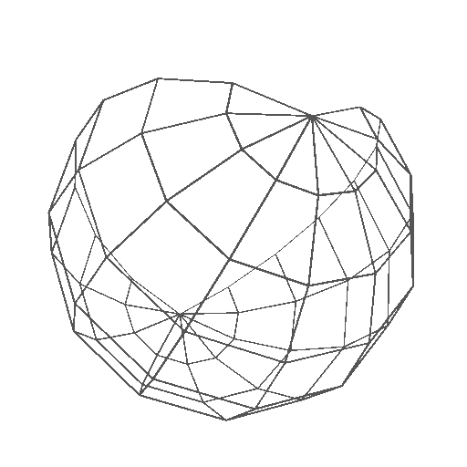
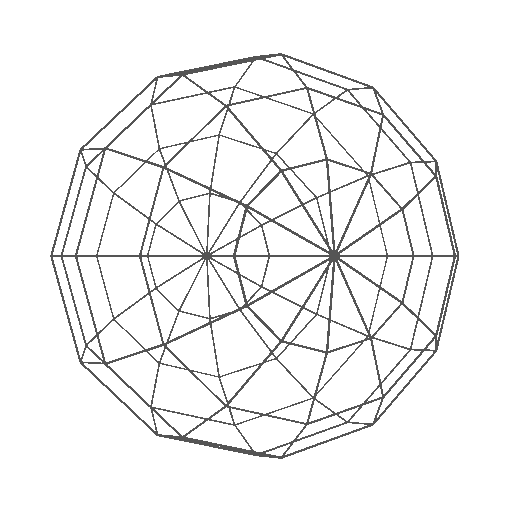

Projet conçu
pour mobile!
Receiving local datas

Visioscope
acoustique
Please allow geolocation
for the app to work

An experiment in surveillance apprehension
-learn more on
Visiologie
project website-
Please allow geolocation for the app to work
Turn On
Oscillator Type
Sine
Square
Sawtooth
Triangle
Distance max :
500m
Volume/Gain :
50